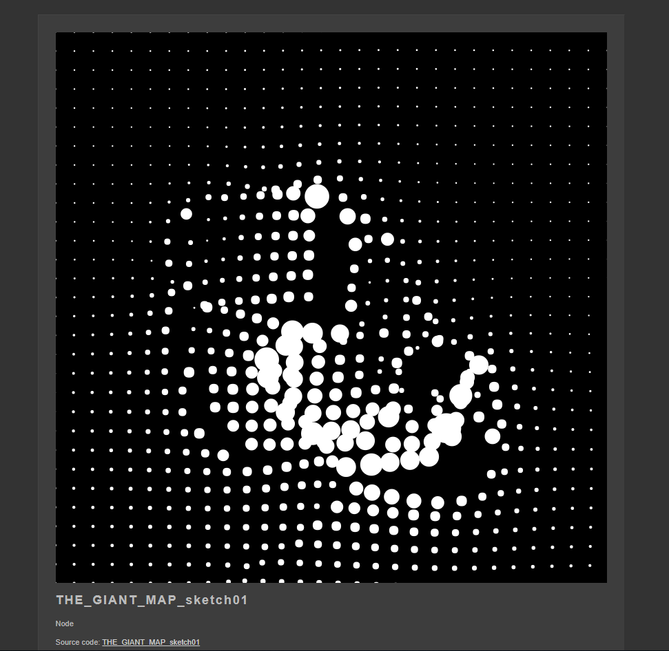
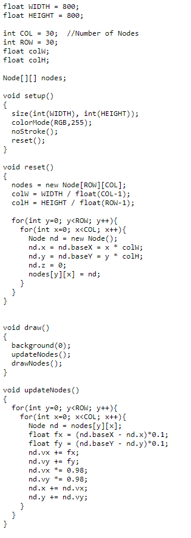

"THE GIANT MAP" est une google map géant interactive mettant l'utilisateur à la place d'une créature géante
voyant le monde de très haut et pouvant interagir avec celui-ci.
Pour plus d''information sur le travail de cette artiste,cliquez
ici.
Takayuki Fukatsu et Akira Iwaya sont des amis passionés de creatives coding.
A eux deux ils possèdent une page nommée
fladict permettant d'essayer des approches de creative coding sous différents formes.
La partie du projet qui m'a le plus inspiré et intrigué est le code permettant de faire interagir des points de façon à former des noeuds avec la vitesse d'un pointeur sur cette surface .On peut voir des enjeux important derrière ce projet bien que ludique, les deux amis voulaient gagnés un concours avec celui-ci.


Le projet est une approche sur le moyen d'interagir avec un environnement cartographique et la position de l'homme dans cette environnement avec les changements de perspectives engendrés.
J'ai choisi ce projet pour la simple et bonne raison qu'il m'est apparu comme étant une approche interactive autour de carte du monde, interessant accessible et permettant à l'utilisateur de pouvoir se projetter sur celle-ci de façon ludique.
Ce projet peut avoir une utilité dans la façon d'utiliser et d'interagir avec une carte du monde dans un jeu vidéo dans lequel nous nous trouvons de façon diégétique.Pour faire simple imaginez vous déployez votre carte du monde et pouvoir vous y baladez de façon purement naturel en piétinant sa carte, le tout évidement en étant en jeu.